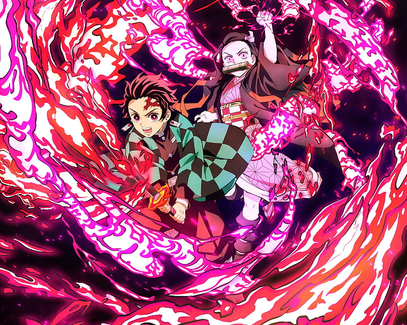

About Demon Slayer:
It follows teenage Tanjiro Kamado, who strives to become a Demon Slayer after his family was slaughtered and his younger sister, Nezuko, turned into a demon.
Tanjiro Characteristics
Tanjiro is kind by nature and has been described by others as having very gentle eyes. He exhibits a great deal of determination and will not give up once he has a goal to achieve; the best example of this is his relentless quest to find a cure for Nezuko.
Nezuko Characteristics
Nezuko was a kind and caring girl, who thought of others before herself much like her older brother, Tanjiro, and was a responsible older sister to her younger siblings. Nezuko is, however, not afraid to get in harm's way, protecting her friends from Demons even after being returned to a human state.